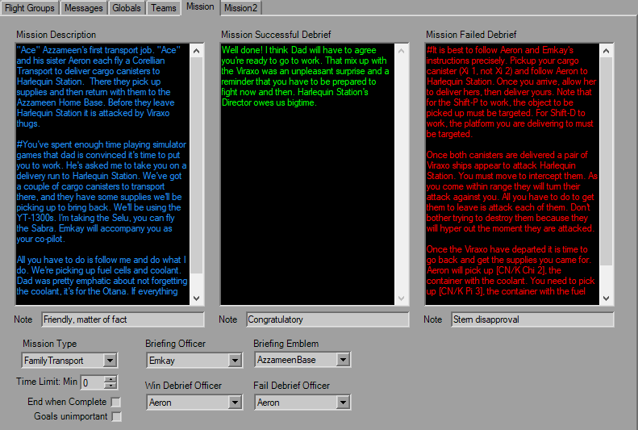
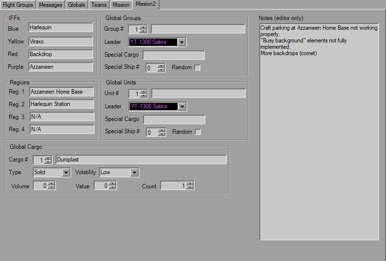

Mission Parameters

The first Mission tab sets a couple of other overall settings. The large text boxes at the top are the mission texts for before and after the missions, along with the voice actor notes below them.
The Hanger value is essentially Mission Type, which normally will be "Family Transport" or "Calamari Cruiser". Set a time limit for the mission if you wish, and below that is the option to force the mission to end once the primary goals are completed.
Briefing Officer and Briefing Emblem control a couple briefing images and mission update messages during flight.

On the second tab the IFFs names can be defined, although hostility is defined on the Teams tab. Names can also be set for the region names, which in-game can be viewed when using certain goals or during the briefing if the region change event is used. Also editable here are the details of the Global Groups and Global Units, which in-game the names can be seen in some goals. More testing is needed to determine if the other values have an effect.
The Global Cargo fields have been expanded, and really the only thing you need to worry about is the text box for the cargo string itself. This lets you use a single cargo definition for several flightgroups, and there's triggers designed around this cargo string as well. The offsets are local to the beginning of the GC definition. It's unknown if there's any real use for the other values, although the intent of the Volatility field is to change the explosiveness when destroyed.
There's also a huge chunk of space which is used for editor notes, it doesn't affect the mission in any way.